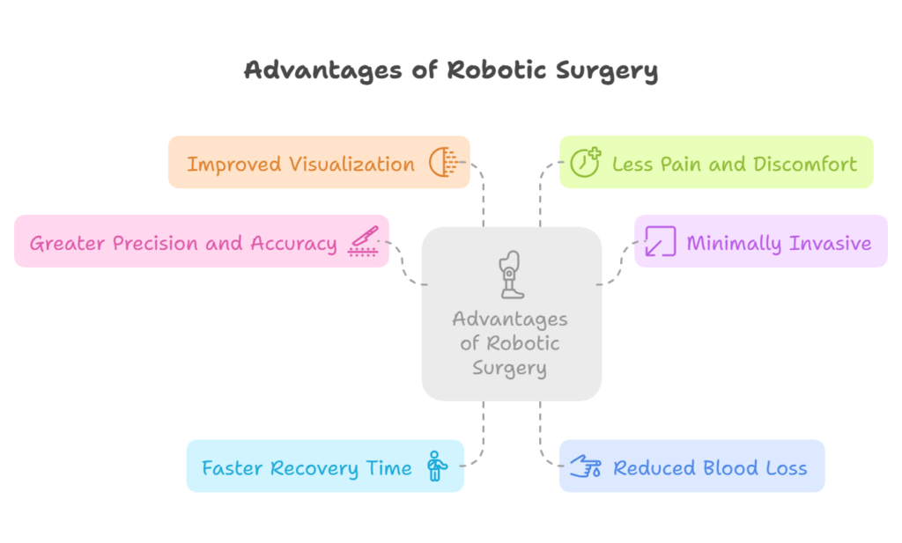
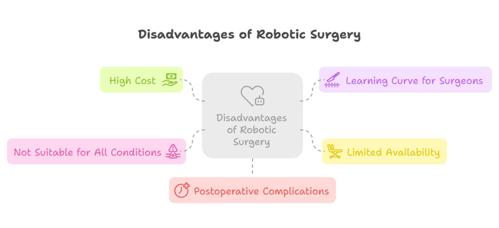

As technology continues to advance, traditional surgical techniques have evolved into more modern, efficient, and less invasive methods. One of the most notable innovations in surgery is robotic surgery, a technique that uses robotic systems to assist surgeons during operations. While robotic surgery has gained popularity and offers numerous benefits, it also comes with its own set of disadvantages.
In this blog, we will explore both the advantages and disadvantages of robotic surgery, helping you understand when it might be the right choice for your treatment. Whether you’re considering Robotic Surgery in Delhi or simply curious about the technology, we’ll provide insight into its potential impact on your health.
What is Robotic Surgery?
Robotic surgery is a minimally invasive surgical technique that involves the use of robotic systems to perform operations with greater precision, flexibility, and control. The procedure is carried out by a surgeon; the robotic system assists in controlling the surgical instruments. The surgeon is still in control of the procedure, but the robotic system enhances their ability to perform delicate and complex tasks.
Robotic surgery is used in a variety of fields, including urology, gynecology, cardiac surgery, and general surgery. It can be applied to treat a range of conditions, such as prostate cancer, kidney stones, hernias, and more.
Advantages of Robotic Surgery

1. Greater Precision and Accuracy
One of the key advantages of robotic surgery is its ability to perform highly precise and accurate movements. The robotic system uses advanced technology, including high-definition 3D visualization, to allow surgeons to see the surgical area more clearly. This enhanced visualization enables the surgeon to make smaller, more precise incisions, reducing the risk of damage to surrounding tissues and organs.
2. Minimally Invasive
Robotic surgery is minimally invasive, meaning that the surgeon makes small incisions instead of large cuts, which is common in traditional open surgeries. Smaller incisions result in less trauma to the body, which leads to a quicker recovery time, reduced pain, and minimal scarring. For patients, this can mean a more comfortable recovery period and less risk of complications such as infections.
3. Faster Recovery Time
Since robotic surgery is minimally invasive, patients typically experience a faster recovery compared to traditional surgery. With smaller incisions and less tissue damage, there is less postoperative pain and a quicker return to normal activities. In some cases, patients can go home the same day or within a day or two after the procedure.
4. Reduced Blood Loss
The precision of robotic surgery allows surgeons to minimize blood loss during surgery. The robotic instruments are designed to be more precise and less disruptive to the surrounding tissue, which reduces the likelihood of excessive bleeding. This is particularly important in surgeries involving critical organs or those where blood loss can pose a significant risk to the patient’s health.
5. Improved Visualization
Robotic systems provide surgeons with enhanced visualization of the surgical site, offering high-definition 3D imaging. This allows the surgeon to view the area in much more detail than with the human eye alone. The advanced visualization helps surgeons plan and execute the procedure with greater confidence, especially when performing complex surgeries or those in hard-to-reach areas.
6. Less Pain and Discomfort
Because robotic surgery involves smaller incisions and less tissue manipulation, patients experience less pain and discomfort during the recovery process. This leads to a more positive overall experience, as patients typically recover more quickly and with fewer complications than with traditional surgery.
Disadvantages of Robotic Surgery

1. High Cost
One of the primary drawbacks of robotic surgery is the cost. The robotic systems themselves are expensive, and the maintenance and operational costs can add up over time. This cost is often passed on to patients, making robotic surgery more expensive than traditional surgery. Some patients may not have insurance coverage that includes robotic surgery, which can limit its accessibility for certain individuals.
2. Learning Curve for Surgeons
While robotic surgery provides greater precision and control, it requires surgeons to undergo extensive training to operate the robotic systems effectively. There is a learning curve, and not all surgeons are trained to use robotic technology. Patients should ensure that their surgeon has the necessary expertise and experience in robotic surgery before undergoing the procedure.
3. Limited Availability
While robotic surgery is becoming more widely available, it is still not offered at every hospital or medical facility. The high cost of the technology means that not all hospitals can afford to invest in robotic surgery systems. Therefore, patients may need to travel to specialized centers or hospitals that have the equipment and trained professionals available
4. Not Suitable for All Conditions
While robotic surgery is suitable for many types of procedures, it is not the right choice for every condition. Some surgeries, especially those involving emergencies or highly complex procedures, may be better suited for traditional techniques. In such cases, it’s important to consult with your doctor to determine the best approach based on your specific condition.
5. Postoperative Complications
Although robotic surgery reduces the risk of certain complications, it is not entirely risk-free. As with any surgical procedure, there are risks of infection, blood clots, or other complications. Patients should follow their doctor’s postoperative care instructions to minimize these risks and ensure a smooth recovery.
Is Robotic Surgery Right for You?
Robotic surgery can be an excellent choice for many patients, especially those who are seeking a minimally invasive approach with faster recovery times and fewer complications. However, it’s important to consult with a skilled Robotic Surgeon in Delhi, like Dr. Atul Peters, to determine if robotic surgery is the right option for your specific condition.
Dr. Atul Peters has extensive experience in performing robotic surgeries and can provide you with a thorough evaluation to assess whether this innovative technique is suitable for your needs. With his expertise, you can rest assured that you will receive the highest level of care throughout your treatment journey.
Conclusion
Robotic surgery is a significant advancement in the medical field, offering many advantages, such as greater precision, reduced blood loss, and faster recovery times. However, it also comes with some disadvantages, such as high costs and limited availability. It’s essential to consider both the benefits and drawbacks before deciding if robotic surgery is the best option for you.
Recommended Further Reading
Have Personal Health Questions?
Consult with Dr. Atul Peters and our expert multidisciplinary team at Max Smart Super Speciality Hospital, Saket, New Delhi.
Book Your Consultation